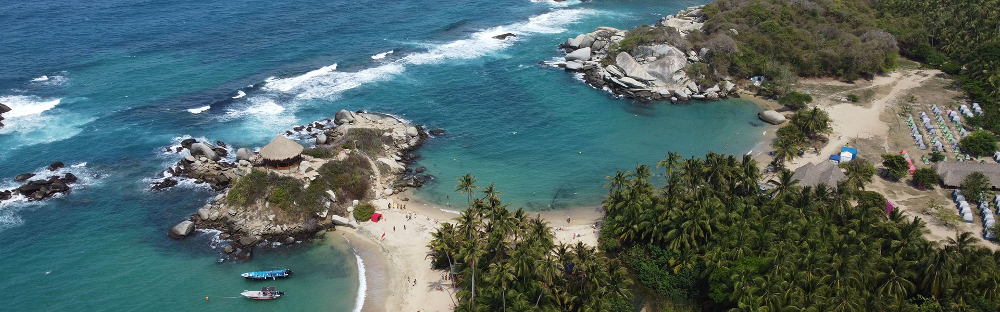

El Parque Nacional Natural Tayrona es una de las areas protegidas mas visitadas e importantes de Colombia. Está ubicado en el departamento del Magdalena, a solo 34 kilometros de la ciudad de Santa Marta, en la Costa Caribe colombiana.
Es un lugar unico en el mundo donde la selva tropical se encuentra directamente con el mar Caribe, creando paisajes de una belleza excepcional. Sus playas de arena blanca rodeadas de vegetacion exuberante y aguas turquesas lo han convertido en uno de los destinos turisticos mas reconocidos de America Latina.
El nombre del parque proviene de la civilizacion Tayrona, uno de los pueblos indigenas mas avanzados que habitaron esta region antes de la llegada de los españoles. Los Tayronas construyeron ciudades de piedra en medio de la selva, de las cuales la mas famosa es Ciudad Perdida, tambien conocida como Teyuna, ubicada dentro del mismo parque.
El Parque Nacional Tayrona fue creado oficialmente en 1969. Hoy en dia varias comunidades indigenas como los Koguis, Arhuacos y Wiwas siguen habitando sus territorios dentro y alrededor del parque, manteniendo vivas sus tradiciones ancestrales.
El parque cuenta con mas de 30 playas, cada una con caracteristicas diferentes. Cabo San Juan es considerada la playa mas hermosa del parque, con sus aguas cristalinas y una vista unica desde los miradores naturales. Arrecifes es la playa mas conocida pero no apta para nadar por sus corrientes peligrosas.
La Piscina y Castilletes son ideales para el baño tranquilo. Cañaveral es la playa de entrada principal al parque y cuenta con cabañas para hospedarse. Todas las playas estan rodeadas de vegetacion tropical que llega hasta la orilla del mar.
El Parque Tayrona alberga una biodiversidad extraordinaria. En su territorio conviven mas de 300 especies de aves, 100 especies de mamiferos como monos, tigrillos y dantas, y mas de 200 especies de peces en sus arrecifes de coral. Tambien es habitat de tortugas marinas que llegan a desovar en sus playas.
En cuanto a flora, el parque cuenta con selvas tropicales, manglares, matorrales secos y ecosistemas marinos. Esta diversidad de habitats lo convierte en uno de los ecosistemas mas ricos y complejos de Colombia.
Para ingresar al parque es obligatorio hacer una reserva previa en linea a traves de la pagina del Ministerio de Ambiente. El ingreso tiene un costo y el cupo diario es limitado para proteger el ecosistema. Se recomienda reservar con varios dias de anticipacion, especialmente en temporada alta.
Dentro del parque no se permite hacer fogatas, tirar basura, recoger plantas o animales, ni ingresar con alcohol. Se recomienda llevar repelente de insectos, bloqueador solar biodegradable, agua suficiente y calzado comodo para caminar por los senderos.